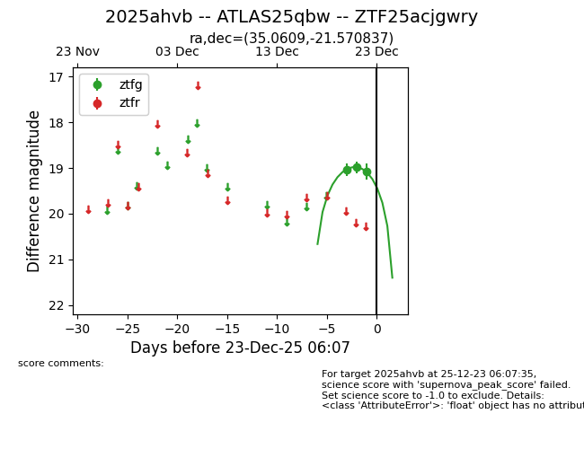
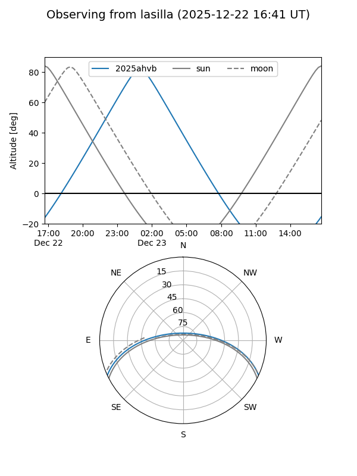
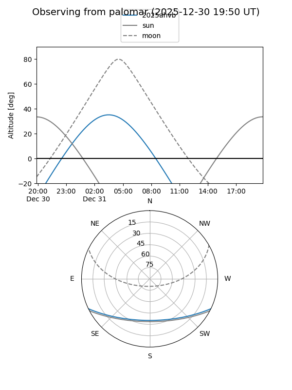
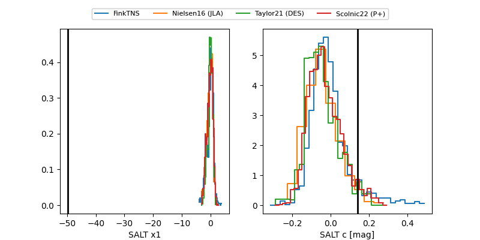

2025ahvb
Target 2025ahvb at 2025-12-31 18:00
Aliases and brokers:
FINK: link
Lasair: link
ALeRCE: link
TNS: link
YSE: link
alt names
ZTF25acjgwry (ztf,fink_ztf)
2025ahvb (tns,yse)
ATLAS25qbw (atlas)
Coordinates:
equatorial (ra, dec) = 35.0609,-21.57084
equatorial (HMS+DMS) = 02:20:14.61,-21:34:15.01
galactic (l, b) = (202.3883,-69.05730)
Flags:
Photometry:
last ztfg=19.08
3 ztfg detections
Lightcurve

Visibility


Additional plots
